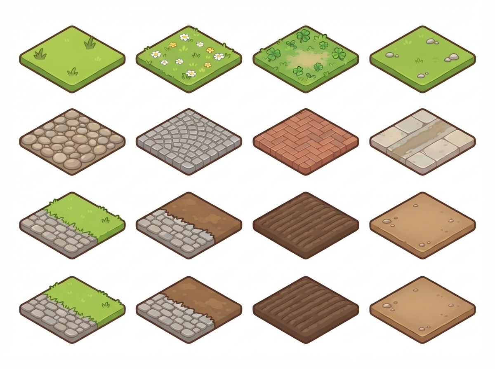

Green frame = the pick used in the game. To swap: python3 .claude/skills/openart-pictures/fetch.py pick sheet68-square-tiles <version>, then import again.

Bright, friendly mobile-game cartoon in exactly the art style of reference image 1 (use it only for the style): thick rounded dark brown outlines, flat colours with simple cel shading, chunky cute proportions. A sheet of 12 ground tiles for a village square, in 4 columns and 3 rows, numbered row by row. Every tile is ONE flat diamond-shaped paving slab seen from above at an isometric angle, exactly twice as wide as it is deep, with a thin slab edge visible along its two front sides, all twelve the same size, the same angle and the same light from the top left. Each slab is one solid piece with its texture running right out to its four edges so that the slabs can be laid side by side; no objects standing on them, no loose bits beside them, no shadows outside the slab. Plain pure white background, evenly spaced with wide white space between the slabs, none touching, no text, no letters, no numbers, no labels, no captions under the slabs, no frames, no grid lines, no people, no animals. Row 1, grass: 1 plain bright green grass with a few darker grass tufts; 2 green grass with small white and yellow daisies; 3 green grass with clover leaves and a little paler worn patch; 4 green grass with a few small grey pebbles. Row 2, paving: 5 round warm-grey river cobblestones packed close together; 6 small square grey setts laid in neat curved rows; 7 red-brown bricks laid in a herringbone pattern; 8 pale grey flagstones with a worn darker strip through the middle like a much-walked path. Row 3, edges and earth: 9 cobblestones on the lower left half and green grass on the upper right half, the two meeting along a ragged diagonal line; 10 cobblestones on the lower left half and brown soil on the upper right half, meeting along a ragged diagonal line; 11 dark brown tilled soil with neat furrows; 12 light packed brown earth with a few small pebbles.